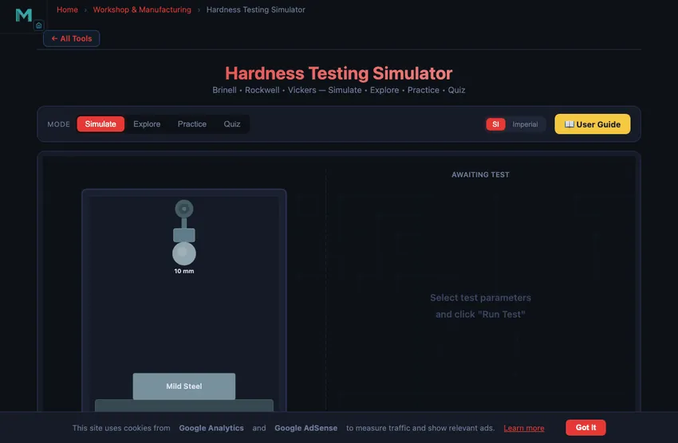

Hardness Conversion Chart & Testing Simulator
Brinell • Rockwell • Vickers — Simulate • Explore • Practice • Quiz
3D Model — Hardness Conversion Chart & Testing Simulator
Interactive 3D model of this apparatus. Pick a component on the right, then drag to rotate · scroll to zoom · right-drag to pan.
1 Overview
The Hardness Testing Simulator lets you perform virtual Brinell, Rockwell, and Vickers hardness tests on five engineering materials. Hardness testing measures a material's resistance to permanent indentation and is one of the most common quality control tests in manufacturing. Each method uses a different indenter shape and load, producing a characteristic impression whose size or depth is converted to a hardness number (BHN, HRC, HRB, HRA, or HV).
The simulator reproduces the complete testing workflow with animated indentation, an indentation sound effect, and real-time results. Seven built-in materials are available, plus a "+ Custom" material builder. A SI / Imperial unit toggle switches between kgf and lbf, mm and inches. After testing, export results as CSV or save the canvas as PNG (with watermark). Right-click the canvas for quick export and reset options.
2 Setting Up the Job
The simulator opens in Simulate mode with Brinell selected as the default test method. The canvas at the top shows an animated cross-section of the indenter and specimen. Below it, readout badges display the current hardness number, method, applied load, and indentation measurement. The control panel lets you select the test method (Brinell, Rockwell, or Vickers), choose a material, adjust load and indenter settings, and run the test.
To perform your first test: (1) Leave the method as Brinell or choose Rockwell or Vickers. (2) Select a material such as Mild Steel. (3) For Brinell, adjust the ball diameter and load; for Rockwell, pick a scale (A, B, or C); for Vickers, set the load. (4) Click "Run Test" to watch the indentation animation. (5) Read the resulting hardness number and indentation measurement in the readout cards below. Click "Reset" to clear results and start a new test.
3 Running the Operation
In Simulate mode, the canvas animates the full indentation sequence. For Brinell, you see a tungsten carbide ball pressing into the surface, leaving a circular impression whose diameter is measured. For Rockwell, a diamond cone or steel ball indenter applies a minor load, then the major load, and the penetration depth is measured after the major load is removed. For Vickers, a diamond pyramid presses into the surface and the diagonals of the square impression are measured.
The readout row shows six values: Hardness Number (with units like BHN, HRC, or HV), Test Method, Applied Load (kgf), Indenter Type, Indentation measurement (mm), and Material name. These values update after each test completes. Experiment with different materials to see how the indentation size changes: softer materials like aluminium produce larger impressions (lower hardness numbers), while harder materials like cast iron show smaller impressions (higher hardness numbers).
4 Speeds, Feeds & Theory
Click the "Explore" tab to access a curated library of 12 hardness testing concepts organized into three categories: Test Methods, Indenters and Scales, and Conversions. Each category presents a grid of selectable concept cards. Click any card to display a detailed description with formulas, units, and a worked numerical example.
Topics covered include the Brinell formula (BHN = 2F / pi D(D - sqrt(D^2 - d^2))), Rockwell depth measurement scales, Vickers diagonal measurement, hardness conversion between scales, scale selection guidelines for different materials, and the relationship between hardness and tensile strength. Use this mode to build a solid theoretical foundation before tackling practice problems.
5 Try a Problem
Practice mode generates random hardness calculation problems. You might be asked to calculate the BHN given a load, ball diameter, and impression diameter, or to determine the Vickers hardness from a load and diagonal measurement. Enter your numerical answer and click "Check." The score tracker shows your cumulative performance. If you get stuck, click "Next Problem" for a fresh question.
Quiz mode presents five questions per session mixing theory (e.g., which test method is best for thin coatings?) and calculation problems. After answering all five questions, you see your score with a star rating and a review of each question. Aim for at least 4 out of 5 to confirm your understanding of hardness testing principles.
6 Keyboard Shortcuts
- 1 / 2 / 3 / 4 — Switch to Simulate / Explore / Practice / Quiz mode.
- Space — Run test (in Simulate mode when idle).
- R — Reset the current test (in Simulate mode).
- Enter — Submit your answer in Practice or Quiz mode.
- Right-click the canvas — Open context menu with Export PNG, Export CSV, and Reset options.
7 Tips & Best Practices
- Start with Brinell testing since the formula is the most detailed and appears frequently in exams.
- Compare the same material across all three methods to understand how BHN, HRC, and HV relate to each other.
- Remember that Rockwell measures depth (fast, direct reading) while Brinell and Vickers measure impression size (requires microscope).
- For Rockwell, know the three main scales: A (thin steel, carbides), B (softer metals like brass and aluminum), C (hardened steels).
- The Vickers test gives a load-independent hardness number, making it the most versatile for comparing materials across the full hardness range.
- In Practice mode, write down the formula before calculating to build muscle memory for exams.
- Use Explore mode as a quick reference during practice if you forget a formula or unit conversion.
Hardness Testing Simulator — Brinell, Rockwell & Vickers Methods

Hardness is a material’s resistance to permanent indentation. The three standard methods are Brinell (steel ball, BHN), Rockwell (diamond cone or ball, HRC/HRB), and Vickers (diamond pyramid, HV). Rockwell is fastest (direct reading), Brinell suits castings, and Vickers works on thin sections. This simulator lets you perform all three tests virtually with animated indentation.
Hardness testing is one of the most widely used mechanical tests in materials science and manufacturing quality control. It measures a material's resistance to permanent deformation — specifically, its resistance to localized plastic deformation caused by an indenter being pressed into the surface under a controlled load. Unlike tensile or impact tests that destroy the specimen, most hardness tests are non-destructive or semi-destructive, leaving only a small indentation on the surface. This makes hardness testing ideal for incoming material inspection, process control, and failure analysis.
What Is the Brinell Hardness Test?
Developed by Johan August Brinell in 1900, the Brinell test uses a hardened steel or tungsten carbide ball (typically 10 mm diameter) pressed into the surface under loads ranging from 500 to 3000 kgf. After removing the load, the diameter of the resulting circular impression is measured using a microscope. The Brinell Hardness Number (BHN) is calculated as: BHN = 2F / [πD(D − √(D² − d²))], where F is the applied force in kgf, D is the ball diameter in mm, and d is the impression diameter in mm. The Brinell test is especially suitable for materials with coarse or heterogeneous microstructures, such as castings and forgings, because the large indentation averages out local variations.
How Does the Rockwell Hardness Test Work?
The Rockwell test, developed by Stanley Rockwell in 1914, is the most commonly used hardness test in industry due to its speed and simplicity. It measures hardness based on the depth of penetration rather than the size of the indentation. A minor load (10 kgf) is first applied to seat the indenter and establish a reference position. Then a major load is applied (60, 100, or 150 kgf depending on the scale) and removed, leaving only the minor load. The permanent increase in depth of penetration is used to calculate the hardness number. Scale C (HRC) uses a diamond cone indenter with 150 kgf major load and is used for hardened steels. Scale B (HRB) uses a 1/16" steel ball with 100 kgf for softer materials. The direct-reading dial eliminates the need for microscopic measurement, making it the fastest production hardness test.
How Is Vickers Hardness Measured?
The Vickers test, developed in 1921 by Robert Smith and George Sandland at Vickers Ltd, uses a diamond pyramid indenter with an included angle of 136° between opposite faces. The test load can range from 1 to 120 kgf (macro) or as low as 10 gf for microhardness testing. After load removal, both diagonals of the square impression are measured under a microscope and averaged. The Vickers Hardness Number is: HV = 1.854F / d², where F is in kgf and d is the mean diagonal in mm. A key advantage of the Vickers test is that the hardness number is independent of load — unlike Brinell, which requires specific load-to-diameter ratios. This makes the Vickers scale continuous across all materials from soft aluminium to the hardest steels.
How Do I Use This Hardness Testing Simulator?
In Simulate mode, select a test method (Brinell, Rockwell, or Vickers), choose a material, adjust the load and indenter parameters, and click "Run Test" to watch an animated indentation sequence. The simulator calculates the correct impression size from known material hardness values and displays the hardness number, indentation measurement, and all test parameters. Switch to Explore mode to study 12 concepts covering test methods, indenter types, scale selection, and hardness conversions. Practice mode generates random calculation problems with step-by-step solutions, and Quiz tests your knowledge with 5 questions per session covering both theory and numerical problems.
Which Test Goes With Which Job
Three tests, three workshops. After a few years on the bench you stop hesitating about which method to reach for. The decision tree is usually:
- Brinell — soft and inhomogeneous materials. Cast iron, large forgings, gray cast aluminium engine blocks. The 10 mm ball spreads the indentation over a wide area, averaging out local grain variations. The trade-off is that the indentation is visible to the naked eye — not great on a finished part.
- Rockwell — production line, hardened steel. Heat-treated steel, hardened tool steel, bearing races, fastener tests. The dial gives a direct reading in 10−15 seconds. The HRC scale (diamond cone, 150 kgf) is the most commonly cited hardness number in industry — every steel datasheet quotes it.
- Vickers — thin sections, microhardness, or research. Case-hardened layers (0.1−1 mm thick), electroplated coatings, individual phases in a microstructure. The diamond pyramid leaves a sharp impression of the order of a few tens of microns; a microscope reads the diagonal. Slow but extremely versatile.
A Worked Vickers Example — Through-Hardened Bearing Steel
You run a 30 kgf load Vickers test on a hardened 100Cr6 (52100) bearing race. The measured diagonal is 0.230 mm. What is the hardness?
| Step | Working | Result |
|---|---|---|
| Apply Vickers formula | HV = 1.854 × F / d² | — |
| Plug in | HV = 1.854 × 30 / (0.230)² | HV 1051 |
| Convert (approximately) to HRC | using the standard table | ~66 HRC |
| Typical 100Cr6 hardness range | 62−66 HRC | ✓ confirms heat treatment |
That tells the QC inspector the bearing race is in spec. Reading HV directly is fine; converting to HRC is sometimes asked for because most bearing datasheets use the Rockwell scale. The conversion is approximate — ASTM E140 includes the standard table.
Standards Worth Citing on a Lab Report
- ISO 6506-1:2014 — Brinell hardness test — Test method.
- ISO 6508-1:2016 — Rockwell hardness test — Test method.
- ISO 6507-1:2018 — Vickers hardness test — Test method.
- ASTM E140-12b — Standard Hardness Conversion Tables for Metals. The reference for converting between HV, HB, HRC, HRB.
- Tabor, D. (1951) — The Hardness of Metals. Oxford. The classical theoretical treatment, still cited.
Hardness Conversion Chart — HRC to HB, HV & Tensile Strength
Approximate conversions for carbon and alloy steel per ASTM E140 / ASTM A370 Table 2 (SAE J417). Type a value to filter — for example 58 (HRC) or 231 (HBW). If the exact value is not listed, the nearest row is shown.
Hardness Converter
Enter a value on any scale to convert to the others. Values between table rows are linearly interpolated.
| Brinell HBW 10 mm / 3000 kgf |
Vickers HV |
Rockwell C HRC |
Rockwell B HRB |
Tensile MPa approx. |
Tensile ksi approx. |
|---|---|---|---|---|---|
| — | 940 | 68 | — | — | — |
| — | 900 | 67 | — | — | — |
| — | 865 | 66 | — | — | — |
| — | 832 | 65 | — | — | — |
| 739 | 800 | 64 | — | — | — |
| 722 | 772 | 63 | — | — | — |
| 705 | 746 | 62 | — | — | — |
| 688 | 720 | 61 | — | — | — |
| 670 | 697 | 60 | — | — | — |
| 654 | 674 | 59 | — | — | — |
| 634 | 653 | 58 | — | — | — |
| 615 | 633 | 57 | — | — | — |
| 595 | 613 | 56 | — | — | — |
| 577 | 595 | 55 | — | — | — |
| 560 | 577 | 54 | — | — | — |
| 543 | 560 | 53 | — | — | — |
| 525 | 544 | 52 | — | — | — |
| 512 | 528 | 51 | — | — | — |
| 496 | 513 | 50 | — | 1710 | 248 |
| 481 | 498 | 49 | — | 1660 | 241 |
| 469 | 484 | 48 | — | 1620 | 235 |
| 455 | 471 | 47 | — | 1570 | 228 |
| 443 | 458 | 46 | — | 1530 | 222 |
| 432 | 446 | 45 | — | 1490 | 216 |
| 421 | 434 | 44 | — | 1450 | 210 |
| 409 | 423 | 43 | — | 1410 | 204 |
| 400 | 412 | 42 | — | 1380 | 200 |
| 390 | 402 | 41 | — | 1345 | 195 |
| 381 | 392 | 40 | — | 1315 | 191 |
| 371 | 382 | 39 | — | 1280 | 186 |
| 362 | 372 | 38 | — | 1250 | 181 |
| 353 | 363 | 37 | — | 1220 | 177 |
| 344 | 354 | 36 | — | 1185 | 172 |
| 336 | 345 | 35 | — | 1160 | 168 |
| 327 | 336 | 34 | — | 1130 | 164 |
| 319 | 327 | 33 | — | 1100 | 160 |
| 311 | 318 | 32 | — | 1075 | 156 |
| 301 | 310 | 31 | — | 1040 | 151 |
| 294 | 302 | 30 | — | 1015 | 147 |
| 286 | 294 | 29 | — | 985 | 143 |
| 279 | 286 | 28 | — | 965 | 140 |
| 271 | 279 | 27 | — | 935 | 136 |
| 264 | 272 | 26 | — | 910 | 132 |
| 258 | 266 | 25 | — | 890 | 129 |
| 253 | 260 | 24 | 100 | 875 | 127 |
| 247 | 254 | 23 | 99 | 850 | 123 |
| 243 | 248 | 22 | 98 | 840 | 122 |
| 237 | 243 | 21 | 97 | 820 | 119 |
| 231 | 238 | 20 | 96 | 795 | 115 |
| 223 | 230 | — | 95 | 770 | 112 |
| 216 | 222 | — | 94 | 745 | 108 |
| 212 | 217 | — | 93 | 730 | 106 |
| 207 | 213 | — | 92 | 715 | 104 |
| 202 | 208 | — | 91 | 695 | 101 |
| 197 | 203 | — | 90 | 680 | 99 |
| 192 | 198 | — | 89 | 660 | 96 |
| 187 | 193 | — | 88 | 645 | 94 |
| 183 | 188 | — | 87 | 630 | 91 |
| 178 | 183 | — | 86 | 615 | 89 |
| 174 | 179 | — | 85 | 600 | 87 |
| 170 | 175 | — | 84 | 585 | 85 |
| 166 | 171 | — | 83 | 575 | 83 |
| 163 | 167 | — | 82 | 560 | 81 |
| 159 | 163 | — | 81 | 550 | 80 |
| 156 | 160 | — | 80 | 540 | 78 |
| 149 | 152 | — | 78 | 515 | 75 |
| 143 | 146 | — | 76 | 495 | 72 |
| 137 | 140 | — | 74 | 475 | 69 |
| 131 | 134 | — | 72 | 450 | 65 |
| 126 | 129 | — | 70 | 435 | 63 |
| 121 | 124 | — | 68 | 415 | 60 |
| 116 | 119 | — | 66 | 400 | 58 |
| 111 | 114 | — | 64 | 385 | 56 |
| 107 | 110 | — | 62 | 370 | 54 |
| 103 | 106 | — | 60 | 355 | 51 |
| 99 | 102 | — | 58 | 340 | 49 |
| 95 | 98 | — | 56 | 330 | 48 |
How to read it: find your measured value in its own column, then read across. Conversions are approximate and apply to carbon and alloy steel — austenitic stainless, cast iron and non-ferrous alloys use different tables (ASTM E140 Tables 3–5) and must not be converted with this chart. Rockwell C is valid only from about 20–68 HRC; below that use Rockwell B. Brinell is not used above roughly 650 HBW because the ball indenter itself deforms. Tensile strength uses the accepted estimate UTS (MPa) ≈ 3.45 × HBW, shown only up to 500 HBW where that correlation holds. It is an estimate, never a substitute for a tensile test.
How Do You Convert Between Hardness Scales?
What Are the Differences Between Brinell, Rockwell, and Vickers?
| Feature | Brinell (HB) | Rockwell (HR) | Vickers (HV) |
|---|---|---|---|
| Indenter | 10 mm steel/carbide ball | Diamond cone or ball | Diamond pyramid (136°) |
| Load Range | 500 – 3000 kgf | 60 – 150 kgf | 1 – 120 kgf |
| Measurement | Indentation diameter | Depth of indentation | Diagonal of indentation |
| Best For | Castings, forgings | Quick shop-floor testing | Thin sections, coatings |
| Standard | ASTM E10 / ISO 6506 | ASTM E18 / ISO 6508 | ASTM E92 / ISO 6507 |
Explore Related Simulators
If you found this Hardness Testing simulator helpful, explore our Impact Testing simulator, Universal Testing Machine simulator, Stress–Strain Curve simulator, and Fatigue Testing simulator for more hands-on practice. Harder tempers also demand a larger minimum bend radius — see the Sheet Metal Bend Radius Calculator.